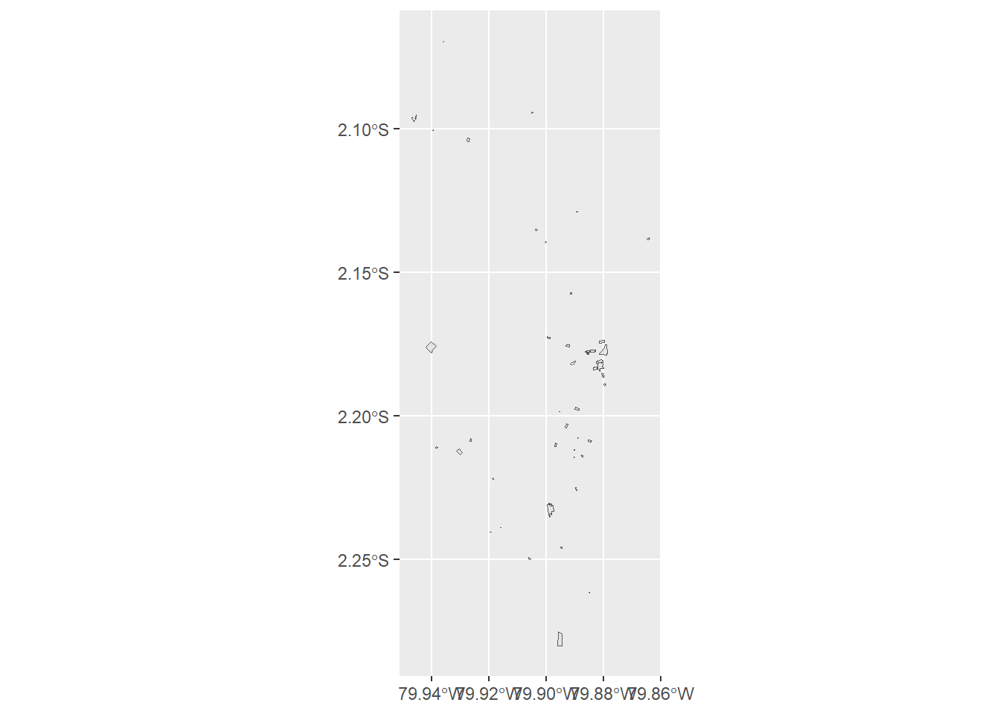

install.packages("osmdata")M3 Introducción a herramientas para la descarga de datos espaciales abiertos
Quiero hacer un análisis, pero ¿de dónde obtengo los datos?
Datos vectoriales
osmdata
El paquete osmdata permite descargar e importar información de OpenStreetMap en distintos formatos, como Simple Features (sf) o Spatial (sp).
### Instalar el paquete
Podemos instalar y cargar el paquete osmdata desde CRAN de la siguiente manera:
Extrayectos datos de OSM
Para realizar consultas específicas en los datos de OSM utilizando osmdata necesitamos:
- Obtener las coordenadas de nuestra área de interés con la función
getbb(). - Realizar la consulta al servidor con la función
opq(). - Detallar las características que necesitamos del lugar con la función
add_osm_feature().
Tras la llamada inicial opq(), las consultas osmdata se construyen añadiendo una o más “características”, que se especifican en términos de pares key-value. Por ejemplo, todos los hospitales se designan en OSM con key = amenity, de modo que una consulta de todas los hospitales en Guayaquil se puede construir de la siguiente manera:
guayaquil_bb <- getbb("Guayaquil Ecuador")
guayaquil_hospitales <- guayaquil_bb %>%
opq() %>%
add_osm_feature(key = "amenity",
value = "hospital") %>%
osmdata_sf()Para visualizar nuestro mapa usaremos ggplot2:
ggplot() +
geom_sf(data = guayaquil_hospitales$osm_polygons)
Si bien esto nos permite visualizar los polígonos correspondientes a los hospitales en Guayaquil, no representa una imagen agradable a la vista. Es por esto que usaremos un mapa base interactivo que explicaremos a detalle en otra sección:
leaflet() %>%
addTiles() %>%
addPolygons(
data = guayaquil_hospitales$osm_polygons)